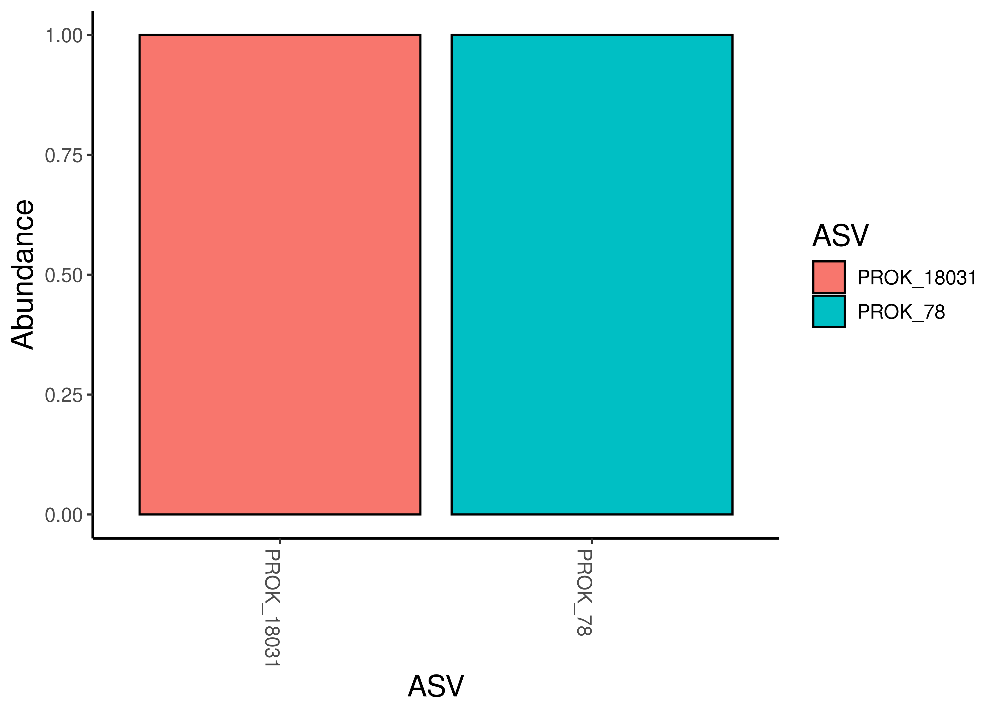
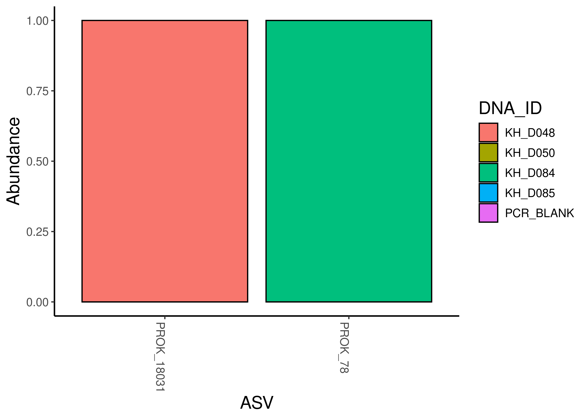
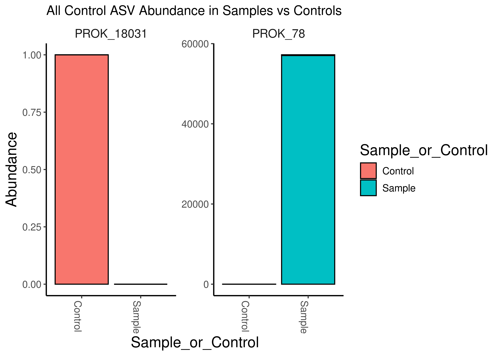
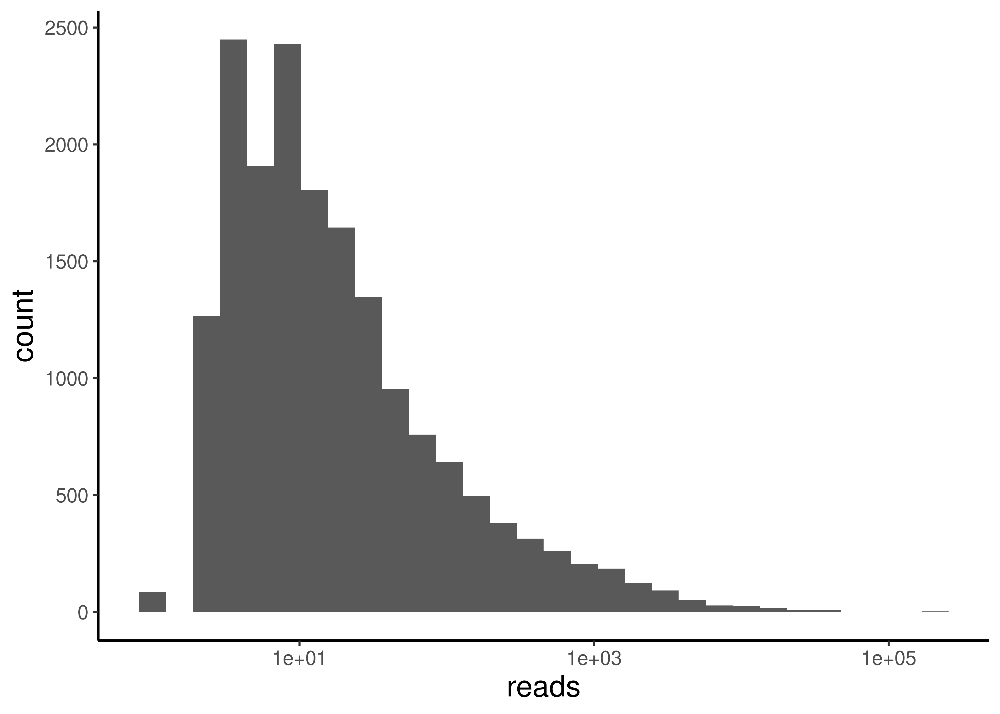
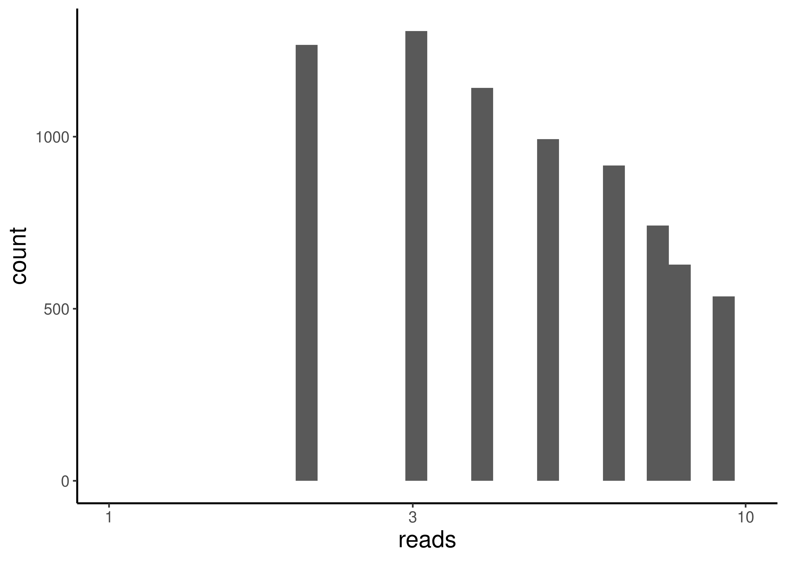
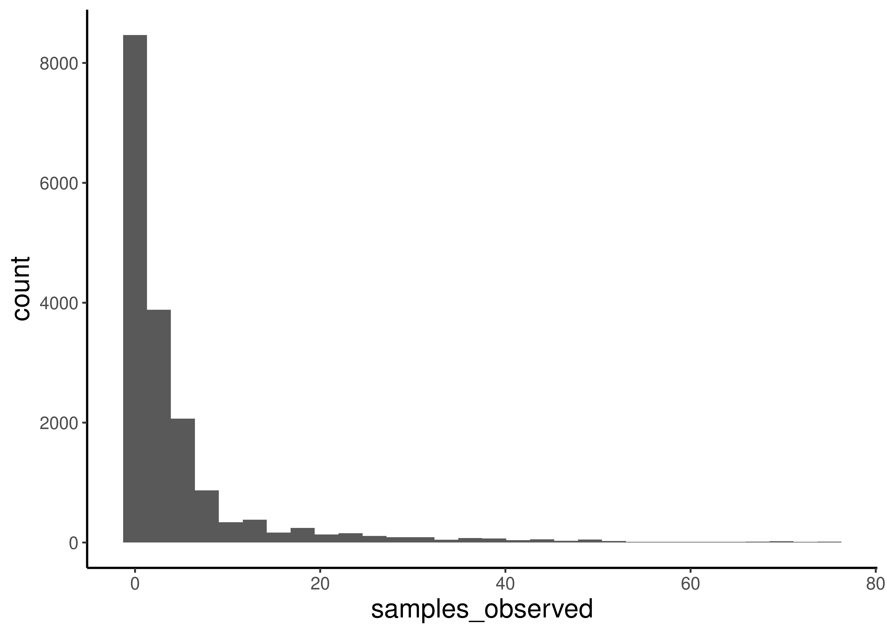
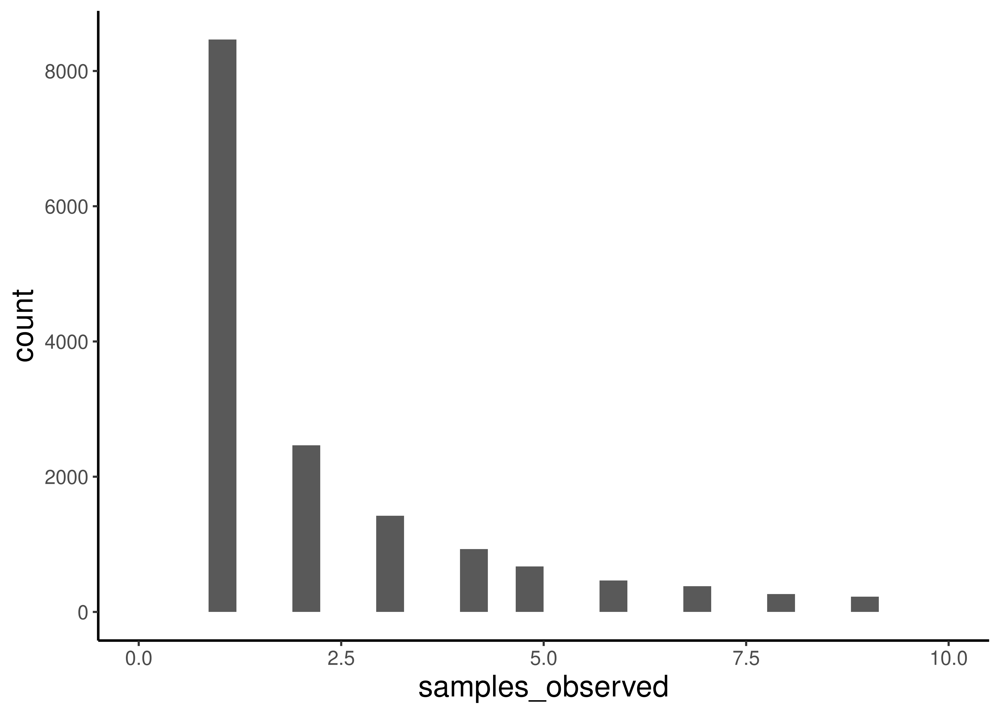
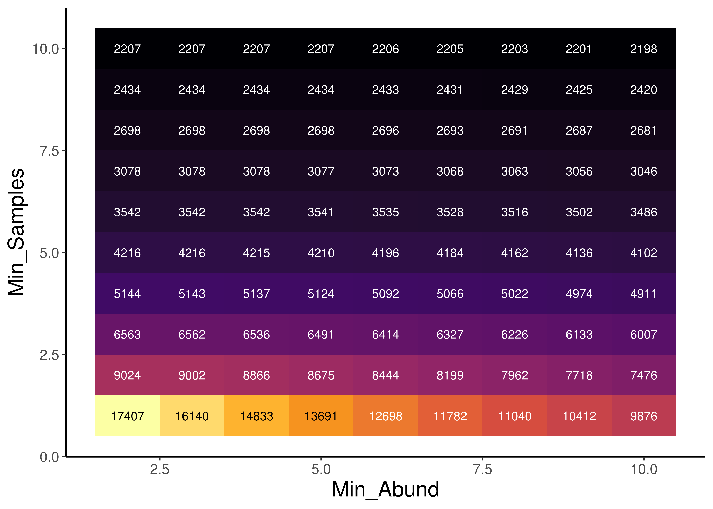
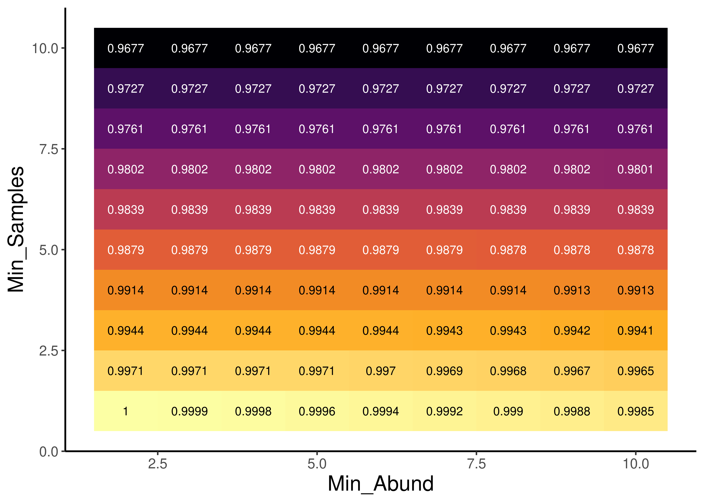
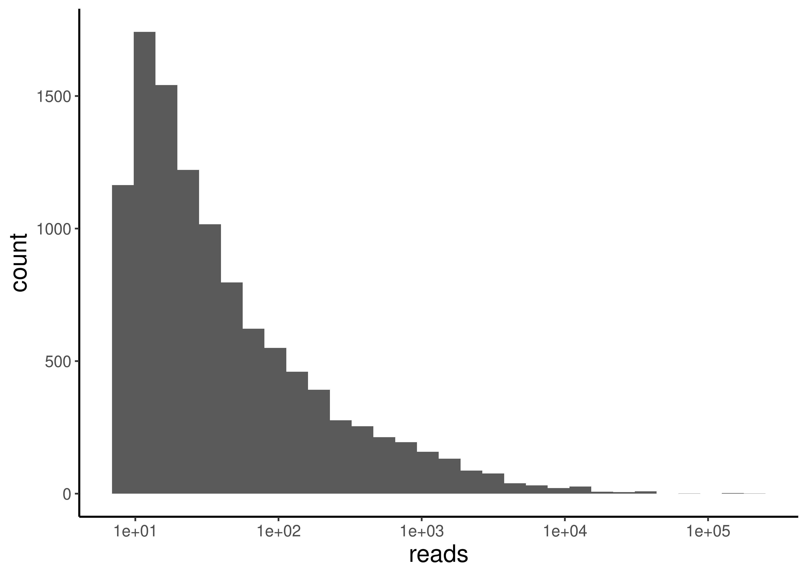

# Load Packages
pacman::p_load(phyloseq, Biostrings, dada2, microViz, tidyverse, install = FALSE)
source("code/R/plotting_aesthetics.R")Prokaryotic Errors and Contamination
Goals of our Pre-Processing File
We will work here in this document to remove any unnecessary ASVs, including assessing contamination from our blanks, and error rates from our mock community.
Load Packages and Functions
Load the data!
# Load in the raw_phyloseq data from DADA2_workflow.Rmd
load("data/02b_Prokaryotic_Taxonomic_Classification/raw_prok_physeq_noplas.RData")
load("data/02b_Prokaryotic_Taxonomic_Classification/raw_prok_plas_physeq.RData")
raw_prok_physeq_noplasphyloseq-class experiment-level object
otu_table() OTU Table: [ 17510 taxa and 83 samples ]
tax_table() Taxonomy Table: [ 17510 taxa by 9 taxonomic ranks ]raw_plas_physeqphyloseq-class experiment-level object
otu_table() OTU Table: [ 599 taxa and 83 samples ]
tax_table() Taxonomy Table: [ 599 taxa by 11 taxonomic ranks ]load("data/01b_Prokaryotic_Denoising/track_df_final.RData")Add metadata to physeq
sample_data(raw_prok_physeq_noplas) <- track_df_final
sample_data(raw_plas_physeq) <- track_df_finalRemove unnecessary taxa
We will need to remove the ASVs that are mitochondria or chloroplast
# Make a new phyloseq object without the mitochondria, chloroplast or mock community
noMitoChloro_physeq <-
raw_prok_physeq_noplas %>%
# Remove the mitochondria ASVs. #NOTE THERE WAS A TYPO HERE IN CLASS!
subset_taxa(Family != "Mitochondria" | is.na(Family)) %>%
# Remove the chloroplast ASVs
subset_taxa( Order !="Chloroplast" | is.na(Order)) %>%
# # remove the mock community and its ASVs
# prune_samples(!sample_names(.) %in% c("Zymo_Mock"), .) %>%
# Now we will remove any ASVs of count 0
prune_taxa(taxa_sums(.) > 0, .)
# Let's take a look
noMitoChloro_physeqphyloseq-class experiment-level object
otu_table() OTU Table: [ 17510 taxa and 83 samples ]
sample_data() Sample Data: [ 83 samples by 8 sample variables ]
tax_table() Taxonomy Table: [ 17510 taxa by 9 taxonomic ranks ]# How many taxa have we removed so far?
num_ASVs_rm <- ntaxa(raw_prok_physeq_noplas) - ntaxa(noMitoChloro_physeq)
cat("We removed ", num_ASVs_rm, " ASVs")We removed 0 ASVs# Proportion of original data maintained
prop_ASV_rm <- 100* ntaxa(noMitoChloro_physeq)/ntaxa(raw_prok_physeq_noplas)
cat("We retained ", prop_ASV_rm, "% of taxa")We retained 100 % of taxaRemove Control samples
Next, we will need to remove ASVs that seem to be contamination based on our controls
#3. Control samples.
# Create a vector with the control samples
control_samples <- c("KH_D024", "KH_D048", "KH_D049", "KH_D050", "KH_D084", "KH_D085", "KH_D085", "PCR_BLANK")
# Which taxa are in the control samples?
control_physeq <-
noMitoChloro_physeq %>%
# Identify control samples
subset_samples(., (DNA_ID %in% control_samples)) %>%
# make sure to remove the ASVs that were not in the controls
prune_taxa(taxa_sums(.) > 0, .)
# Check out the phyloseq object
control_physeqphyloseq-class experiment-level object
otu_table() OTU Table: [ 2 taxa and 5 samples ]
sample_data() Sample Data: [ 5 samples by 8 sample variables ]
tax_table() Taxonomy Table: [ 2 taxa by 9 taxonomic ranks ]# vector of control ASVs
control_ASVs <-
data.frame(control_physeq@tax_table)$ASV
# Plot the abundance of control ASVs across the 4 samples
control_physeq %>%
plot_bar(., "ASV", fill = "ASV")
# Plot the abundance of control ASVs across the 4 samples
control_physeq %>%
plot_bar(., "ASV", fill = "DNA_ID")
# Make a phyloseq object with only the control ASVs in it
controlASVs_physeq <-
noMitoChloro_physeq %>%
subset_taxa(., ASV %in% control_ASVs)
# Check it out
controlASVs_physeqphyloseq-class experiment-level object
otu_table() OTU Table: [ 2 taxa and 83 samples ]
sample_data() Sample Data: [ 83 samples by 8 sample variables ]
tax_table() Taxonomy Table: [ 2 taxa by 9 taxonomic ranks ] # Let's take a look at the plot
controlASVs_physeq %>%
ps_mutate(Sample_or_Control = ifelse(DNA_ID%in%control_samples, "Control","Sample")) %>%
plot_bar(., "Sample_or_Control", fill="Sample_or_Control")+
facet_wrap(~ASV, scales = "free") +
labs(title = "All Control ASV Abundance in Samples vs Controls") 
sample_sums(controlASVs_physeq) KH_D001 KH_D009 KH_D017 KH_D025 KH_D032 KH_D040 KH_D048 KH_D056
0 0 9 0 0 0 1 0
KH_D063 KH_D071 KH_D079 KH_D002 KH_D010 KH_D018 KH_D026 KH_D033
11 0 0 0 0 20 0 0
KH_D041 KH_D057 KH_D064 KH_D072 KH_D080 KH_D003 KH_D011 KH_D019
0 0 10 0 0 11 0 7
KH_D027 KH_D034 KH_D042 KH_D050 KH_D058 KH_D065 KH_D081 KH_D004
0 0 0 0 0 0 0 0
KH_D012 KH_D020 KH_D028 KH_D035 KH_D043 KH_D051 KH_D059 KH_D066
16 14 0 0 0 0 0 0
KH_D074 KH_D082 KH_D005 KH_D013 KH_D021 KH_D029 KH_D036 KH_D044
0 0 0 0 11 11 0 8
KH_D052 KH_D060 KH_D067 KH_D075 KH_D083 KH_D006 KH_D014 KH_D022
0 8 10 0 0 0 0 0
KH_D030 KH_D037 KH_D045 KH_D053 KH_D061 KH_D076 KH_D084 KH_D007
0 0 0 0 7 0 1 7
KH_D015 KH_D023 KH_D031 KH_D038 KH_D046 KH_D054 KH_D062 KH_D069
0 0 0 0 0 0 5 0
KH_D077 KH_D085 KH_D008 KH_D016 PCR_BLANK KH_D039 KH_D047 KH_D055
0 0 0 0 0 0 0 0
ZYMO_MOCK KH_D070 KH_D078
57038 7 0 controlASVs_physeq %>% tax_table() Taxonomy Table: [2 taxa by 9 taxonomic ranks]:
Kingdom Phylum Class
PROK_78 "d__Bacteria" "p__Pseudomonadota" "c__Gammaproteobacteria"
PROK_18031 "d__Bacteria" "p__Pseudomonadota" "c__Gammaproteobacteria"
Order Family
PROK_78 "o__Enterobacterales_737866" "f__Enterobacteriaceae_A_725029"
PROK_18031 "o__Steroidobacterales" "f__Steroidobacteraceae"
Genus Species ASV
PROK_78 "g__Escherichia" "s__marmotae" "PROK_78"
PROK_18031 NA NA "PROK_18031"
ASVseqs
PROK_78 "TACGGAGGGTGCAAGCGTTAATCGGAATTACTGGGCGTAAAGCGCACGCAGGCGGTTTGTTAAGTCAGATGTGAAATCCCCGGGCTCAACCTGGGAACTGCATCTGATACTGGCAAGCTTGAGTCTCGTAGAGGGGGGTAGAATTCCAGGTGTAGCGGTGAAATGCGTAGAGATCTGGAGGAATACCGGTGGCGAAGGCGGCCCCCTGGACGAAGACTGACGCTCAGGTGCGAAAGCGTGGGGAGCAAACAGGATTAGATACCCTGGTAGTCCACGCCGTAAACGATGTCGACTTGGAGGTTGTGCCCTTGAGGCGTGGCTTCCGGAGCTAACGCGTTAAGTCGACCGCCTGGGGAGTACGGCCGCAAGGTTA"
PROK_18031 "TACAGAGGGTGCAAGCGTTAATCGGAATTACTGGGCGTAAAGCGTGCGTAGACGGTTACATAAGTCGGGTGTGAAAGCCCCGGGCTCAACCTGGGAATTGCATTCGAGACTGCGTAGCTAGGGTGCGGAAGAGGGAAGCGGAATTTCCGGTGTAGCGGTGAAATGCGTAGATATCGGAAGGAACACCAGTGGCGAAAGCGGCTTCCTGGTCCAGCACCGACGTTCAGGCACGAAAGCGTGGGGAGCAAACAGGATTAGATACCCTGGTAGTCCACGCCATAAACGATGAGAACTAGACGTTGAAGGGGTAAGCCCTCCAGTGTCGTAGCTAACGCGCTAAGTTCTCCGCCTGGGGAGTACGGCCGCAAGGTTG"asvs_to_remove <- c("PROK_18031", "PROK_78")We should definitely remove both of these ASVs. one of them is represented by literally one read, inside a control. The other is pretty much exclusively represented by the Mock community. I’m going to wait to remove this one. because it will probably be important for assessing error, but it will get removed at the end.
Evaluating Accuracy
I compare which ASVs I observe in our mock sequencing compared to which ASVs should be present.
all_mocks <- readDNAStringSet("data/03b_Prokaryotic_Errors_and_Contamination/mock_fastas/all_mock_ssrRNAs.fasta") # Read in the ssrRNA and whole genome (for yeasts) sequences provided by Zymo
primers <- readDNAStringSet("data/03b_Prokaryotic_Errors_and_Contamination/mock_fastas/primers.fasta") # These are the primers we used
# For murky reasons (and a big pain in my butt), the matchProbePair function from
# biostrings (which would let me anticipate the amplicon sequences produced by primers)
# does not allow degeneracy, even though the underlying matchPattern function that it uses does
# Anyways I source a script which defines a good matchProbePair function that does allow degeneracy.
source("code/R/good_matchProbePair.R")
amps <- map(all_mocks, function(dna)matchProbePair(primers[[1]], primers[[2]], dna, fixed=FALSE)%>%
DNAStringSet()) # Predict amplicon sequences (with primers) for our mocks
amps$Staphylococcus_aureus_16S_1
DNAStringSet object of length 1:
width seq
[1] 413 GTGCCAGCAGCCGCGGTAATACGTAGGTGGCAAG...GACCGCAAGGTTGAAACTCAAAGGAATTGACGG
$Staphylococcus_aureus_16S_2
DNAStringSet object of length 1:
width seq
[1] 413 GTGCCAGCAGCCGCGGTAATACGTAGGTGGCAAG...GACCGCAAGGTTGAAACTCAAAGGAATTGACGG
$Staphylococcus_aureus_16S_3
DNAStringSet object of length 1:
width seq
[1] 413 GTGCCAGCAGCCGCGGTAATACGTAGGTGGCAAG...GACCGCAAGGTTGAAACTCAAAGGAATTGACGG
$Staphylococcus_aureus_16S_4
DNAStringSet object of length 1:
width seq
[1] 413 GTGCCAGCAGCCGCGGTAATACGTAGGTGGCAAG...GACCGCAAGGTTGAAACTCAAAGGAATTGACGG
$Staphylococcus_aureus_16S_5
DNAStringSet object of length 1:
width seq
[1] 413 GTGCCAGCAGCCGCGGTAATACGTAGGTGGCAAG...GACCGCAAGGTTGAAACTCAAAGGAATTGACGG
$Staphylococcus_aureus_16S_6
DNAStringSet object of length 1:
width seq
[1] 413 GTGCCAGCAGCCGCGGTAATACGTAGGTGGCAAG...GACCGCAAGGTTGAAACTCAAAGGAATTGACGG
$Salmonella_enterica_16S_1
DNAStringSet object of length 1:
width seq
[1] 412 GTGCCAGCAGCCGCGGTAATACGGAGGGTGCAAG...GGCCGCAAGGTTAAAACTCAAATGAATTGACGG
$Salmonella_enterica_16S_2
DNAStringSet object of length 1:
width seq
[1] 412 GTGCCAGCAGCCGCGGTAATACGGAGGGTGCAAG...GGCCGCAAGGTTAAAACTCAAATGAATTGACGG
$Salmonella_enterica_16S_3
DNAStringSet object of length 1:
width seq
[1] 412 GTGCCAGCAGCCGCGGTAATACGGAGGGTGCAAG...GGCCGCAAGGTTAAAACTCAAATGAATTGACGG
$Salmonella_enterica_16S_4
DNAStringSet object of length 1:
width seq
[1] 412 GTGCCAGCAGCCGCGGTAATACGGAGGGTGCAAG...GGCCGCAAGGTTAAAACTCAAATGAATTGACGG
$Salmonella_enterica_16S_5
DNAStringSet object of length 1:
width seq
[1] 412 GTGCCAGCAGCCGCGGTAATACGGAGGGTGCAAG...GGCCGCAAGGTTAAAACTCAAATGAATTGACGG
$Salmonella_enterica_16S_5
DNAStringSet object of length 1:
width seq
[1] 412 GTGCCAGCAGCCGCGGTAATACGGAGGGTGCAAG...GGCCGCAAGGTTAAAACTCAAATGAATTGACGG
$Salmonella_enterica_16S_6
DNAStringSet object of length 1:
width seq
[1] 412 GTGCCAGCAGCCGCGGTAATACGGAGGGTGCAAG...GGCCGCAAGGTTAAAACTCAAATGAATTGACGG
$Saccharomyces_cerevisiae_mitochondria_ssrRNA
DNAStringSet object of length 0
$Saccharomyces_cerevisiae_18S_170924
DNAStringSet object of length 1:
width seq
[1] 589 GTGCCAGCAGCCGCGGTAATTCCAGCTCCAATAG...GGTCGCAAGGCTGAAACTTAAAGGAATTGACGG
$Pseudomonas_aeruginosa_16S_1
DNAStringSet object of length 1:
width seq
[1] 412 GTGCCAGCAGCCGCGGTAATACGAAGGGTGCAAG...GGCCGCAAGGTTAAAACTCAAATGAATTGACGG
$Pseudomonas_aeruginosa_16S_2
DNAStringSet object of length 1:
width seq
[1] 412 GTGCCAGCAGCCGCGGTAATACGAAGGGTGCAAG...GGCCGCAAGGTTAAAACTCAAATGAATTGACGG
$Pseudomonas_aeruginosa_16S_3
DNAStringSet object of length 1:
width seq
[1] 412 GTGCCAGCAGCCGCGGTAATACGAAGGGTGCAAG...GGCCGCAAGGTTAAAACTCAAATGAATTGACGG
$Pseudomonas_aeruginosa_16S_4
DNAStringSet object of length 1:
width seq
[1] 412 GTGCCAGCAGCCGCGGTAATACGAAGGGTGCAAG...GGCCGCAAGGTTAAAACTCAAATGAATTGACGG
$Listeria_monocytogenes_16S_1
DNAStringSet object of length 1:
width seq
[1] 413 GTGCCAGCAGCCGCGGTAATACGTAGGTGGCAAG...GACCGCAAGGTTGAAACTCAAAGGAATTGACGG
$Listeria_monocytogenes_16S_2
DNAStringSet object of length 1:
width seq
[1] 413 GTGCCAGCAGCCGCGGTAATACGTAGGTGGCAAG...GACCGCAAGGTTGAAACTCAAAGGAATTGACGG
$Listeria_monocytogenes_16S_3
DNAStringSet object of length 1:
width seq
[1] 413 GTGCCAGCAGCCGCGGTAATACGTAGGTGGCAAG...GACCGCAAGGTTGAAACTCAAAGGAATTGACGG
$Listeria_monocytogenes_16S_4
DNAStringSet object of length 1:
width seq
[1] 413 GTGCCAGCAGCCGCGGTAATACGTAGGTGGCAAG...GACCGCAAGGTTGAAACTCAAAGGAATTGACGG
$Listeria_monocytogenes_16S_5
DNAStringSet object of length 1:
width seq
[1] 413 GTGCCAGCAGCCGCGGTAATACGTAGGTGGCAAG...GACCGCAAGGTTGAAACTCAAAGGAATTGACGG
$Listeria_monocytogenes_16S_6
DNAStringSet object of length 1:
width seq
[1] 413 GTGCCAGCAGCCGCGGTAATACGTAGGTGGCAAG...GACCGCAAGGTTGAAACTCAAAGGAATTGACGG
$Lactobacillus_fermentum_16S_1
DNAStringSet object of length 1:
width seq
[1] 413 GTGCCAGCAGCCGCGGTAATACGTAGGTGGCAAG...GACCGCAAGGTTGAAACTCAAAGGAATTGACGG
$Lactobacillus_fermentum_16S_2
DNAStringSet object of length 1:
width seq
[1] 413 GTGCCAGCAGCCGCGGTAATACGTAGGTGGCAAG...GACCGCAAGGTTGAAACTCAAAGGAATTGACGG
$Lactobacillus_fermentum_16S_3
DNAStringSet object of length 1:
width seq
[1] 413 GTGCCAGCAGCCGCGGTAATACGTAGGTGGCAAG...GACCGCAAGGTTGAAACTCAAAGGAATTGACGG
$Lactobacillus_fermentum_16S_4
DNAStringSet object of length 1:
width seq
[1] 413 GTGCCAGCAGCCGCGGTAATACGTAGGTGGCAAG...GACCGCAAGGTTGAAACTCAAAGGAATTGACGG
$Lactobacillus_fermentum_16S_5
DNAStringSet object of length 1:
width seq
[1] 413 GTGCCAGCAGCCGCGGTAATACGTAGGTGGCAAG...GACCGCAAGGTTGAAACTCAAAGGAATTGACGG
$Escherichia_coli_16S_1
DNAStringSet object of length 1:
width seq
[1] 412 GTGCCAGCAGCCGCGGTAATACGGAGGGTGCAAG...GGCCGCAAGGTTAAAACTCAAATGAATTGACGG
$Escherichia_coli_16S_2
DNAStringSet object of length 1:
width seq
[1] 412 GTGCCAGCAGCCGCGGTAATACGGAGGGTGCAAG...GGCCGCAAGGTTAAAACTCAAATGAATTGACGG
$Escherichia_coli_16S_3
DNAStringSet object of length 1:
width seq
[1] 412 GTGCCAGCAGCCGCGGTAATACGGAGGGTGCAAG...GGCCGCAAGGTTAAAACTCAAATGAATTGACGG
$Escherichia_coli_16S_4
DNAStringSet object of length 1:
width seq
[1] 412 GTGCCAGCAGCCGCGGTAATACGGAGGGTGCAAG...GGCCGCAAGGTTAAAACTCAAATGAATTGACGG
$Escherichia_coli_16S_5
DNAStringSet object of length 1:
width seq
[1] 412 GTGCCAGCAGCCGCGGTAATACGGAGGGTGCAAG...GGCCGCAAGGTTAAAACTCAAATGAATTGACGG
$Escherichia_coli_16S_7
DNAStringSet object of length 1:
width seq
[1] 412 GTGCCAGCAGCCGCGGTAATACGGAGGGTGCAAG...GGCCGCAAGGTTAAAACTCAAATGAATTGACGG
$Escherichia_coli_16S_8
DNAStringSet object of length 1:
width seq
[1] 412 GTGCCAGCAGCCGCGGTAATACGGAGGGTGCAAG...GGCCGCAAGGTTAAAACTCAAATGAATTGACGG
$Enterococcus_faecalis_16S_1
DNAStringSet object of length 1:
width seq
[1] 413 GTGCCAGCAGCCGCGGTAATACGTAGGTGGCAAG...GACCGCAAGGTTGAAACTCAAAGGAATTGACGG
$Enterococcus_faecalis_16S_2
DNAStringSet object of length 1:
width seq
[1] 413 GTGCCAGCAGCCGCGGTAATACGTAGGTGGCAAG...GACCGCAAGGTTGAAACTCAAAGGAATTGACGG
$Enterococcus_faecalis_16S_3
DNAStringSet object of length 1:
width seq
[1] 413 GTGCCAGCAGCCGCGGTAATACGTAGGTGGCAAG...GACCGCAAGGTTGAAACTCAAAGGAATTGACGG
$Enterococcus_faecalis_16S_4
DNAStringSet object of length 1:
width seq
[1] 413 GTGCCAGCAGCCGCGGTAATACGTAGGTGGCAAG...GACCGCAAGGTTGAAACTCAAAGGAATTGACGG
$Cryptococcus_neoformans_Mitochondria_ssrRNA
DNAStringSet object of length 0
$Cryptococcus_neoformans_18S_170924
DNAStringSet object of length 1:
width seq
[1] 589 GTGCCAGCAGCCGCGGTAATTCCAGCTCCAGTAG...GGTCGCAAGGCTGAAACTTAAAGGAATTGACGG
$Bacillus_subtilis_16S_1
DNAStringSet object of length 1:
width seq
[1] 413 GTGCCAGCAGCCGCGGTAATACGTAGGTGGCAAG...GGTCGCAAGACTGAAACTCAAAGGAATTGACGG
$Bacillus_subtilis_16S_2
DNAStringSet object of length 1:
width seq
[1] 413 GTGCCAGCAGCCGCGGTAATACGTAGGTGGCAAG...GGTCGCAAGACTGAAACTCAAAGGAATTGACGG
$Bacillus_subtilis_16S_3
DNAStringSet object of length 1:
width seq
[1] 413 GTGCCAGCAGCCGCGGTAATACGTAGGTGGCAAG...GGTCGCAAGACTGAAACTCAAAGGAATTGACGG
$Bacillus_subtilis_16S_4
DNAStringSet object of length 1:
width seq
[1] 413 GTGCCAGCAGCCGCGGTAATACGTAGGTGGCAAG...GGTCGCAAGACTGAAACTCAAAGGAATTGACGG
$Bacillus_subtilis_16S_5
DNAStringSet object of length 1:
width seq
[1] 413 GTGCCAGCAGCCGCGGTAATACGTAGGTGGCAAG...GGTCGCAAGACTGAAACTCAAAGGAATTGACGG
$Bacillus_subtilis_16S_6
DNAStringSet object of length 1:
width seq
[1] 413 GTGCCAGCAGCCGCGGTAATACGTAGGTGGCAAG...GGTCGCAAGACTGAAACTCAAAGGAATTGACGG
$Bacillus_subtilis_16S_7
DNAStringSet object of length 1:
width seq
[1] 413 GTGCCAGCAGCCGCGGTAATACGTAGGTGGCAAG...GGTCGCAAGACTGAAACTCAAAGGAATTGACGG
$Bacillus_subtilis_16S_8
DNAStringSet object of length 1:
width seq
[1] 413 GTGCCAGCAGCCGCGGTAATACGTAGGTGGCAAG...GGTCGCAAGACTGAAACTCAAAGGAATTGACGG
$Bacillus_subtilis_16S_9
DNAStringSet object of length 1:
width seq
[1] 413 GTGCCAGCAGCCGCGGTAATACGTAGGTGGCAAG...GGTCGCAAGACTGAAACTCAAAGGAATTGACGG
$Bacillus_subtilis_16S_10
DNAStringSet object of length 1:
width seq
[1] 413 GTGCCAGCAGCCGCGGTAATACGTAGGTGGCAAG...GGTCGCAAGACTGAAACTCAAAGGAATTGACGG
$ptg000001l
DNAStringSet object of length 0
$ptg000002l
DNAStringSet object of length 0
$ptg000003l
DNAStringSet object of length 1:
width seq
[1] 589 CCGTCAATTCCTTTAAGTTTCAGCCTTGCGACCA...TATTGGAGCTGGAATTACCGCGGCTGCTGGCAC
$ptg000004l
DNAStringSet object of length 0
$ptg000005l
DNAStringSet object of length 0
$ptg000006l
DNAStringSet object of length 0
$ptg000007l
DNAStringSet object of length 0
$ptg000008l
DNAStringSet object of length 0
$ptg000009l
DNAStringSet object of length 0
$ptg000010l
DNAStringSet object of length 0
$ptg000011l
DNAStringSet object of length 0
$ptg000012l
DNAStringSet object of length 3:
width seq
[1] 589 CCGTCAATTCCTTTAAGTTTCAGCCTTGCGACCA...TATTGGAGCTGGAATTACCGCGGCTGCTGGCAC
[2] 589 CCGTCAATTCCTTTAAGTTTCAGCCTTGCGACCA...TATTGGAGCTGGAATTACCGCGGCTGCTGGCAC
[3] 589 CCGTCAATTCCTTTAAGTTTCAGCCTTGCGACCA...TATTGGAGCTGGAATTACCGCGGCTGCTGGCAC
$ptg000013l
DNAStringSet object of length 8:
width seq
[1] 589 CCGTCAATTCCTTTAAGTTTCAGCCTTGCGACCA...TATTGGAGCTGGAATTACCGCGGCTGCTGGCAC
[2] 589 CCGTCAATTCCTTTAAGTTTCAGCCTTGCGACCA...TATTGGAGCTGGAATTACCGCGGCTGCTGGCAC
[3] 589 CCGTCAATTCCTTTAAGTTTCAGCCTTGCGACCA...TATTGGAGCTGGAATTACCGCGGCTGCTGGCAC
[4] 589 CCGTCAATTCCTTTAAGTTTCAGCCTTGCGACCA...TATTGGAGCTGGAATTACCGCGGCTGCTGGCAC
[5] 589 CCGTCAATTCCTTTAAGTTTCAGCCTTGCGACCA...TATTGGAGCTGGAATTACCGCGGCTGCTGGCAC
[6] 589 CCGTCAATTCCTTTAAGTTTCAGCCTTGCGACCA...TATTGGAGCTGGAATTACCGCGGCTGCTGGCAC
[7] 589 CCGTCAATTCCTTTAAGTTTCAGCCTTGCGACCA...TATTGGAGCTGGAATTACCGCGGCTGCTGGCAC
[8] 589 CCGTCAATTCCTTTAAGTTTCAGCCTTGCGACCA...TATTGGAGCTGGAATTACCGCGGCTGCTGGCAC
$ptg000014l
DNAStringSet object of length 0
$ptg000015l
DNAStringSet object of length 0
$ptg000016l
DNAStringSet object of length 0
$ptg000017l
DNAStringSet object of length 0
$ptg000018l
DNAStringSet object of length 0
$ptg000019l
DNAStringSet object of length 0
$ptg000020l
DNAStringSet object of length 0
$ptg000021l
DNAStringSet object of length 0
$ptg000022l
DNAStringSet object of length 4:
width seq
[1] 589 GTGCCAGCAGCCGCGGTAATTCCAGCTCCAATAG...GGTCGCAAGGCTGAAACTTAAAGGAATTGACGG
[2] 589 GTGCCAGCAGCCGCGGTAATTCCAGCTCCAATAG...GGTCGCAAGGCTGAAACTTAAAGGAATTGACGG
[3] 589 GTGCCAGCAGCCGCGGTAATTCCAGCTCCAATAG...GGTCGCAAGGCTGAAACTTAAAGGAATTGACGG
[4] 589 GTGCCAGCAGCCGCGGTAATTCCAGCTCCAATAG...GGTCGCAAGGCTGAAACTTAAAGGAATTGACGG
$ptg000023l
DNAStringSet object of length 0
$ptg000024l
DNAStringSet object of length 0
$ptg000025l
DNAStringSet object of length 0
$ptg000026l
DNAStringSet object of length 0
$ptg000027c
DNAStringSet object of length 1:
width seq
[1] 589 GTGCCAGCAGCCGCGGTAATTCCAGCTCCAATAG...GGTCGCAAGGCTGAAACTTAAAGGAATTGACGG
$ptg000028l
DNAStringSet object of length 0
$ptg000029l
DNAStringSet object of length 0
$ptg000030l
DNAStringSet object of length 0
$ptg000031c
DNAStringSet object of length 0
$ptg000032l
DNAStringSet object of length 2:
width seq
[1] 589 GTGCCAGCAGCCGCGGTAATTCCAGCTCCAATAG...GGTCGCAAGGCTGAAACTTAAAGGAATTGACGG
[2] 589 GTGCCAGCAGCCGCGGTAATTCCAGCTCCAATAG...GGTCGCAAGGCTGAAACTTAAAGGAATTGACGG
$ptg000033l
DNAStringSet object of length 2:
width seq
[1] 586 GTGCCAGCAGCCGCGGTAATTCCAGCTCCAATAG...GGTCGCAAGGCTGAAACTTAAAGGAATTGACGG
[2] 589 GTGCCAGCAGCCGCGGTAATTCCAGCTCCAATAG...GGTCGCAAGGCTGAAACTTAAAGGAATTGACGG
$ptg000034l
DNAStringSet object of length 0
$ptg000035l
DNAStringSet object of length 1:
width seq
[1] 589 GTGCCAGCAGCCGCGGTAATTCCAGCTCCAATAG...GGTCGCAAGGCTGAAACTTAAAGGAATTGACGG
$ptg000036l
DNAStringSet object of length 1:
width seq
[1] 588 CCGTCAATTCCTTTAAGTTTCAGCCTTGCGACCA...TATTGGAGCTGGAATTACCGCGGCTGCTGGCAC
$ptg000037l
DNAStringSet object of length 6:
width seq
[1] 589 CCGTCAATTCCTTTAAGTTTCAGCCTTGCGACCA...TATTGGAGCTGGAATTACCGCGGCTGCTGGCAC
[2] 589 CCGTCAATTCCTTTAAGTTTCAGCCTTGCGACCA...TATTGGAGCTGGAATTACCGCGGCTGCTGGCAC
[3] 589 CCGTCAATTCCTTTAAGTTTCAGCCTTGCGACCA...TATTGGAGCTGGAATTACCGCGGCTGCTGGCAC
[4] 589 CCGTCAATTCCTTTAAGTTTCAGCCTTGCGACCA...TATTGGAGCTGGAATTACCGCGGCTGCTGGCAC
[5] 589 CCGTCAATTCCTTTAAGTTTCAGCCTTGCGACCA...TATTGGAGCTGGAATTACCGCGGCTGCTGGCAC
[6] 589 CCGTCAATTCCTTTAAGTTTCAGCCTTGCGACCA...TATTGGAGCTGGAATTACCGCGGCTGCTGGCAC
$ptg000038l
DNAStringSet object of length 1:
width seq
[1] 590 CCGTCAATTCCTTTAAGTTTCAGCCTTGCGACCA...TATTGGAGCTGGAATTACCGCGGCTGCTGGCAC
$ptg000039l
DNAStringSet object of length 1:
width seq
[1] 589 GTGCCAGCAGCCGCGGTAATTCCAGCTCCAATAG...GGTCGCAAGGCTGAAACTTAAAGGAATTGACGG
$ptg000040l
DNAStringSet object of length 2:
width seq
[1] 589 CCGTCAATTCCTTTAAGTTTCAGCCTTGCGACCA...TATTGGAGCTGGAATTACCGCGGCTGCTGGCAC
[2] 589 CCGTCAATTCCTTTAAGTTTCAGCCTTGCGACCA...TATTGGAGCTGGAATTACCGCGGCTGCTGGCAC
$ptg000041l
DNAStringSet object of length 0
$ptg000042l
DNAStringSet object of length 3:
width seq
[1] 589 GTGCCAGCAGCCGCGGTAATTCCAGCTCCAATAG...GGTCGCAAGGCTGAAACTTAAAGGAATTGACGG
[2] 589 GTGCCAGCAGCCGCGGTAATTCCAGCTCCAATAG...GGTCGCAAGGCTGAAACTTAAAGGAATTGACGG
[3] 589 GTGCCAGCAGCCGCGGTAATTCCAGCTCCAATAG...GGTCGCAAGGCTGAAACTTAAAGGAATTGACGG
$ptg000043l
DNAStringSet object of length 1:
width seq
[1] 590 CCGTCAATTCCTTTAAGTTTCAGCCTTGCGACCA...TATTGGAGCTGGAATTACCGCGGCTGCTGGCAC
$ptg000044l
DNAStringSet object of length 1:
width seq
[1] 589 GTGCCAGCAGCCGCGGTAATTCCAGCTCCAATAG...GGTCGCAAGGCTGAAACTTAAAGGAATTGACGG
$ptg000045l
DNAStringSet object of length 1:
width seq
[1] 589 GTGCCAGCAGCCGCGGTAATTCCAGCTCCAATAG...GGTCGCAAGGCTGAAACTTAAAGGAATTGACGG
$ptg000046l
DNAStringSet object of length 1:
width seq
[1] 589 CCGTCAATTCCTTTAAGTTTCAGCCTTGCGACCA...TATTGGAGCTGGAATTACCGCGGCTGCTGGCAC
$ptg000047l
DNAStringSet object of length 2:
width seq
[1] 589 CCGTCAATTCCTTTAAGTTTCAGCCTTGCGACCA...TATTGGAGCTGGAATTACCGCGGCTGCTGGCAC
[2] 589 CCGTCAATTCCTTTAAGTTTCAGCCTTGCGACCA...TATTGGAGCTGGAATTACCGCGGCTGCTGGCAC
$ptg000048l
DNAStringSet object of length 0
$ptg000049l
DNAStringSet object of length 4:
width seq
[1] 589 GTGCCAGCAGCCGCGGTAATTCCAGCTCCAATAG...GGTCGCAAGGCTGAAACTTAAAGGAATTGACGG
[2] 589 GTGCCAGCAGCCGCGGTAATTCCAGCTCCAATAG...GGTCGCAAGGCTGAAACTTAAAGGAATTGACGG
[3] 588 GTGCCAGCAGCCGCGGTAATTCCAGCTCCAATAG...GGTCGCAAGGCTGAAACTTAAAGGAATTGACGG
[4] 587 GTGCCAGCAGCCGCGGTAATTCAGCTCCAATAGC...GGTCGCAAGGCTGAAACTTAAAGGAATTGACGG
$ptg000050l
DNAStringSet object of length 3:
width seq
[1] 589 CCGTCAATTCCTTTAAGTTTCAGCCTTGCGACCA...TATTGGAGCTGGAATTACCGCGGCTGCTGGCAC
[2] 589 CCGTCAATTCCTTTAAGTTTCAGCCTTGCGACCA...TATTGGAGCTGGAATTACCGCGGCTGCTGGCAC
[3] 589 CCGTCAATTCCTTTAAGTTTCAGCCTTGCGACCA...TATTGGAGCTGGAATTACCGCGGCTGCTGGCAC
$ptg000051l
DNAStringSet object of length 1:
width seq
[1] 589 CCGTCAATTCCTTTAAGTTTCAGCCTTGCGACCA...TATTGGAGCTGGAATTACCGCGGCTGCTGGCAC
$ptg000052l
DNAStringSet object of length 2:
width seq
[1] 587 CCGTCAATTCCTTTAAGTTTCAGCCTTGCGACCA...TATTGGAGCTGGAATTACCGCGGCTGCTGGCAC
[2] 589 CCGTCAATTCCTTTAAGTTTCAGCCTTGCGACCA...TATTGGAGCTGGAATTACCGCGGCTGCTGGCAC
$ptg000053l
DNAStringSet object of length 0
$ptg000054l
DNAStringSet object of length 1:
width seq
[1] 589 GTGCCAGCAGCCGCGGTAATTCCAGCTCCAATAG...GGTCGCAAGGCTGAAACTTAAAGGAATTGACGG
$ptg000055l
DNAStringSet object of length 1:
width seq
[1] 589 GTGCCAGCAGCCGCGGTAATTCCAGCTCCAATAG...GGTCGCAAGGCTGAAACTTAAAGGAATTGACGG
$ptg000056l
DNAStringSet object of length 0
$ptg000057l
DNAStringSet object of length 2:
width seq
[1] 589 CCGTCAATTCCTTTAAGTTTCAGCCTTGCGACCA...TATTGGAGCTGGAATTACCGCGGCTGCTGGCAC
[2] 586 CCGTCAATTCCTTTAAGTTTCAGCCTTGCGACCA...TATTGGAGCTGGAATTACCGCGGCTGCTGGCAC
$ptg000058l
DNAStringSet object of length 2:
width seq
[1] 589 GTGCCAGCAGCCGCGGTAATTCCAGCTCCAATAG...GGTCGCAAGGCTGAAACTTAAAGGAATTGACGG
[2] 589 GTGCCAGCAGCCGCGGTAATTCCAGCTCCAATAG...GGTCGCAAGGCTGAAACTTAAAGGAATTGACGG
$ptg000059l
DNAStringSet object of length 1:
width seq
[1] 589 CCGTCAATTCCTTTAAGTTTCAGCCTTGCGACCA...TATTGGAGCTGGAATTACCGCGGCTGCTGGCAC
$ptg000060l
DNAStringSet object of length 2:
width seq
[1] 589 CCGTCAATTCCTTTAAGTTTCAGCCTTGCGACCA...TATTGGAGCTGGAATTACCGCGGCTGCTGGCAC
[2] 589 CCGTCAATTCCTTTAAGTTTCAGCCTTGCGACCA...TATTGGAGCTGGAATTACCGCGGCTGCTGGCAC
$ptg000061l
DNAStringSet object of length 2:
width seq
[1] 589 CCGTCAATTCCTTTAAGTTTCAGCCTTGCGACCA...TATTGGAGCTGGAATTACCGCGGCTGCTGGCAC
[2] 589 CCGTCAATTCCTTTAAGTTTCAGCCTTGCGACCA...TATTGGAGCTGGAATTACCGCGGCTGCTGGCAC
$ptg000062l
DNAStringSet object of length 1:
width seq
[1] 589 GTGCCAGCAGCCGCGGTAATTCCAGCTCCAATAG...GGTCGCAAGGCTGAAACTTAAAGGAATTGACGG
$ptg000063l
DNAStringSet object of length 2:
width seq
[1] 589 GTGCCAGCAGCCGCGGTAATTCCAGCTCCAATAG...GGTCGCAAGGCTGAAACTTAAAGGAATTGACGG
[2] 592 GTGCCAGCAGCCGCGGTAATTCCAGCTCCAATAG...GGTCGCAAGGCTGAAACTTAAAGGAATTGACGG
$ptg000001l
DNAStringSet object of length 0
$ptg000002l
DNAStringSet object of length 0
$ptg000003l
DNAStringSet object of length 0
$ptg000004l
DNAStringSet object of length 0
$ptg000005l
DNAStringSet object of length 0
$ptg000006l
DNAStringSet object of length 0
$ptg000007l
DNAStringSet object of length 0
$ptg000008l
DNAStringSet object of length 0
$ptg000009l
DNAStringSet object of length 0
$ptg000010l
DNAStringSet object of length 0
$ptg000011l
DNAStringSet object of length 0
$ptg000012l
DNAStringSet object of length 0
$ptg000013l
DNAStringSet object of length 0
$ptg000014l
DNAStringSet object of length 0
$ptg000015l
DNAStringSet object of length 0
$ptg000016l
DNAStringSet object of length 0
$ptg000017l
DNAStringSet object of length 0
$ptg000018l
DNAStringSet object of length 0
$ptg000019l
DNAStringSet object of length 0
$ptg000020l
DNAStringSet object of length 1:
width seq
[1] 589 CCGTCAATTCCTTTAAGTTTCAGCCTTGCGACCA...TACTGGAGCTGGAATTACCGCGGCTGCTGGCAC
$ptg000021l
DNAStringSet object of length 0
$ptg000022l
DNAStringSet object of length 5:
width seq
[1] 589 GTGCCAGCAGCCGCGGTAATTCCAGCTCCAGTAG...GGTCGCAAGGCTGAAACTTAAAGGAATTGACGG
[2] 589 GTGCCAGCAGCCGCGGTAATTCCAGCTCCAGTAG...GGTCGCAAGGCTGAAACTTAAAGGAATTGACGG
[3] 589 GTGCCAGCAGCCGCGGTAATTCCAGCTCCAGTAG...GGTCGCAAGGCTGAAACTTAAAGGAATTGACGG
[4] 589 GTGCCAGCAGCCGCGGTAATTCCAGCTCCAGTAG...GGTCGCAAGGCTGAAACTTAAAGGAATTGACGG
[5] 607 GTGCCAGCAGCCGCGGTAATTCCAGCTCCAGTAG...GGTCGCAAGGCTGAAACTTAAAGGAATTGACGG
$ptg000023l
DNAStringSet object of length 0
$ptg000024l
DNAStringSet object of length 0
$ptg000025l
DNAStringSet object of length 0
$ptg000026c
DNAStringSet object of length 0
$ptg000027l
DNAStringSet object of length 3:
width seq
[1] 589 GTGCCAGCAGCCGCGGTAATTCCAGCTCCAGTAG...GGTCGCAAGGCTGAAACTTAAAGGAATTGACGG
[2] 589 GTGCCAGCAGCCGCGGTAATTCCAGCTCCAGTAG...GGTCGCAAGGCTGAAACTTAAAGGAATTGACGG
[3] 589 GTGCCAGCAGCCGCGGTAATTCCAGCTCCAGTAG...GGTCGCAAGGCTGAAACTTAAAGGAATTGACGG
$ptg000028l
DNAStringSet object of length 2:
width seq
[1] 589 CCGTCAATTCCTTTAAGTTTCAGCCTTGCGACCA...TACTGGAGCTGGAATTACCGCGGCTGCTGGCAC
[2] 589 CCGTCAATTCCTTTAAGTTTCAGCCTTGCGACCA...TACTGGAGCTGGAATTACCGCGGCTGCTGGCAC
$ptg000029l
DNAStringSet object of length 2:
width seq
[1] 589 CCGTCAATTCCTTTAAGTTTCAGCCTTGCGACCA...TACTGGAGCTGGAATTACCGCGGCTGCTGGCAC
[2] 589 CCGTCAATTCCTTTAAGTTTCAGCCTTGCGACCA...TACTGGAGCTGGAATTACCGCGGCTGCTGGCAC
$ptg000030l
DNAStringSet object of length 2:
width seq
[1] 589 GTGCCAGCAGCCGCGGTAATTCCAGCTCCAGTAG...GGTCGCAAGGCTGAAACTTAAAGGAATTGACGG
[2] 589 GTGCCAGCAGCCGCGGTAATTCCAGCTCCAGTAG...GGTCGCAAGGCTGAAACTTAAAGGAATTGACGG
$ptg000031l
DNAStringSet object of length 3:
width seq
[1] 589 CCGTCAATTCCTTTAAGTTTCAGCCTTGCGACCA...TACTGGAGCTGGAATTACCGCGGCTGCTGGCAC
[2] 588 CCGTCAATTCCTTTAAGTTTCAGCCTTGCGACCA...TACTGGAGCTGGAATTACCGCGGCTGCTGGCAC
[3] 591 CCGTCAATTCCTTTAAGTTTCAGCCTTGCGACCA...TACTGGAGCTGGAATTACCGCGGCTGCTGGCAC
$ptg000032l
DNAStringSet object of length 2:
width seq
[1] 589 GTGCCAGCAGCCGCGGTAATTCCAGCTCCAGTAG...GGTCGCAAGGCTGAAACTTAAAGGAATTGACGG
[2] 589 GTGCCAGCAGCCGCGGTAATTCCAGCTCCAGTAG...GGTCGCAAGGCTGAAACTTAAAGGAATTGACGG
$ptg000033l
DNAStringSet object of length 2:
width seq
[1] 589 CCGTCAATTCCTTTAAGTTTCAGCCTTGCGACCA...TACTGGAGCTGGAATTACCGCGGCTGCTGGCAC
[2] 589 CCGTCAATTCCTTTAAGTTTCAGCCTTGCGACCA...TACTGGAGCTGGAATTACCGCGGCTGCTGGCAC
$ptg000034l
DNAStringSet object of length 3:
width seq
[1] 589 GTGCCAGCAGCCGCGGTAATTCCAGCTCCAGTAG...GGTCGCAAGGCTGAAACTTAAAGGAATTGACGG
[2] 589 GTGCCAGCAGCCGCGGTAATTCCAGCTCCAGTAG...GGTCGCAAGGCTGAAACTTAAAGGAATTGACGG
[3] 589 GTGCCAGCAGCCGCGGTAATTCCAGCTCCAGTAG...GGTCGCAAGGCTGAAACTTAAAGGAATTGACGG
$ptg000035l
DNAStringSet object of length 0
$ptg000036l
DNAStringSet object of length 1:
width seq
[1] 589 CCGTCAATTCCTTTAAGTTTCAGCCTTGCGACCA...TACTGGAGCTGGAATTACCGCGGCTGCTGGCAC
$ptg000037l
DNAStringSet object of length 2:
width seq
[1] 589 GTGCCAGCAGCCGCGGTAATTCCAGCTCCAGTAG...GGTCGCAAGGCTGAAACTTAAAGGAATTGACGG
[2] 589 GTGCCAGCAGCCGCGGTAATTCCAGCTCCAGTAG...GGTCGCAAGGCTGAAACTTAAAGGAATTGACGG
$ptg000038l
DNAStringSet object of length 7:
width seq
[1] 589 CCGTCAATTCCTTTAAGTTTCAGCCTTGCGACCA...TACTGGAGCTGGAATTACCGCGGCTGCTGGCAC
[2] 589 CCGTCAATTCCTTTAAGTTTCAGCCTTGCGACCA...TACTGGAGCTGGAATTACCGCGGCTGCTGGCAC
[3] 589 CCGTCAATTCCTTTAAGTTTCAGCCTTGCGACCA...TACTGGAGCTGGAATTACCGCGGCTGCTGGCAC
[4] 589 CCGTCAATTCCTTTAAGTTTCAGCCTTGCGACCA...TACTGGAGCTGGAATTACCGCGGCTGCTGGCAC
[5] 589 CCGTCAATTCCTTTAAGTTTCAGCCTTGCGACCA...TACTGGAGCTGGAATTACCGCGGCTGCTGGCAC
[6] 589 CCGTCAATTCCTTTAAGTTTCAGCCTTGCGACCA...TACTGGAGCTGGAATTACCGCGGCTGCTGGCAC
[7] 589 CCGTCAATTCCTTTAAGTTTCAGCCTTGCGACCA...TACTGGAGCTGGAATTACCGCGGCTGCTGGCAC
$ptg000039l
DNAStringSet object of length 0
$ptg000040c
DNAStringSet object of length 0
$ptg000041l
DNAStringSet object of length 2:
width seq
[1] 589 GTGCCAGCAGCCGCGGTAATTCCAGCTCCAGTAG...GGTCGCAAGGCTGAAACTTAAAGGAATTGACGG
[2] 589 GTGCCAGCAGCCGCGGTAATTCCAGCTCCAGTAG...GGTCGCAAGGCTGAAACTTAAAGGAATTGACGG
$ptg000042l
DNAStringSet object of length 0
$ptg000043l
DNAStringSet object of length 2:
width seq
[1] 589 CCGTCAATTCCTTTAAGTTTCAGCCTTGCGACCA...TACTGGAGCTGGAATTACCGCGGCTGCTGGCAC
[2] 589 CCGTCAATTCCTTTAAGTTTCAGCCTTGCGACCA...TACTGGAGCTGGAATTACCGCGGCTGCTGGCAC
$ptg000044l
DNAStringSet object of length 3:
width seq
[1] 588 CCGTCAATTCCTTTAAGTTTCAGCCTTGCGACCA...TACTGGAGCTGGAATTACCGCGGCTGCTGGCAC
[2] 589 CCGTCAATTCCTTTAAGTTTCAGCCTTGCGACCA...TACTGGAGCTGGAATTACCGCGGCTGCTGGCAC
[3] 589 CCGTCAATTCCTTTAAGTTTCAGCCTTGCGACCA...TACTGGAGCTGGAATTACCGCGGCTGCTGGCAC
$ptg000045l
DNAStringSet object of length 2:
width seq
[1] 589 CCGTCAATTCCTTTAAGTTTCAGCCTTGCGACCA...TACTGGAGCTGGAATTACCGCGGCTGCTGGCAC
[2] 589 CCGTCAATTCCTTTAAGTTTCAGCCTTGCGACCA...TACTGGAGCTGGAATTACCGCGGCTGCTGGCACunique_seqs <-DNAStringSetList(amps)%>%
unlist() %>%
unique()
# Let's also make sure that some aren't in the reverse complement orientation
c(reverseComplement(unique_seqs), unique_seqs) %>%
writeXStringSet("data/03b_Prokaryotic_Errors_and_Contamination/mock_fastas/mock_amplicons.fasta") # Write this to a fasta# Check the mock commmunity
mock_physeq <- noMitoChloro_physeq %>%
subset_samples(.,(DNA_ID=="ZYMO_MOCK")) %>%
prune_taxa(taxa_sums(.) > 0, .)
tax_table(mock_physeq)[,1:8] # Look at what taxa are thereTaxonomy Table: [17 taxa by 8 taxonomic ranks]:
Kingdom Phylum Class
PROK_35 "d__Bacteria" "p__Bacillota_I" "c__Bacilli_A"
PROK_55 "d__Bacteria" "p__Bacillota_I" "c__Bacilli_A"
PROK_61 "d__Bacteria" "p__Bacillota_I" "c__Bacilli_A"
PROK_65 "d__Bacteria" "p__Bacillota_I" "c__Bacilli_A"
PROK_78 "d__Bacteria" "p__Pseudomonadota" "c__Gammaproteobacteria"
PROK_87 "d__Bacteria" "p__Bacillota_I" "c__Bacilli_A"
PROK_91 "d__Bacteria" "p__Pseudomonadota" "c__Gammaproteobacteria"
PROK_160 "d__Bacteria" "p__Pseudomonadota" "c__Gammaproteobacteria"
PROK_428 "d__Bacteria" "p__Pseudomonadota" "c__Gammaproteobacteria"
PROK_1841 "d__Bacteria" "p__Bacillota_I" "c__Bacilli_A"
PROK_2180 "d__Bacteria" "p__Bacillota_I" "c__Bacilli_A"
PROK_2188 "d__Bacteria" "p__Bacillota_I" "c__Bacilli_A"
PROK_2255 "d__Bacteria" "p__Bacillota_I" "c__Bacilli_A"
PROK_2550 "d__Bacteria" "p__Bacillota_I" "c__Bacilli_A"
PROK_5321 "d__Bacteria" "p__Bacillota_I" "c__Bacilli_A"
PROK_7702 "d__Bacteria" "p__Bacillota_I" "c__Bacilli_A"
PROK_16741 "d__Bacteria" "p__Bacillota_I" "c__Bacilli_A"
Order Family
PROK_35 "o__Bacillales_B_306089" "f__Bacillaceae_H_294103"
PROK_55 "o__Lactobacillales" "f__Lactobacillaceae"
PROK_61 "o__Lactobacillales" "f__Listeriaceae"
PROK_65 "o__Staphylococcales" "f__Staphylococcaceae"
PROK_78 "o__Enterobacterales_737866" "f__Enterobacteriaceae_A_725029"
PROK_87 "o__Lactobacillales" "f__Enterococcaceae"
PROK_91 "o__Enterobacterales_737866" "f__Enterobacteriaceae_A_725029"
PROK_160 "o__Pseudomonadales_A_650611" "f__Pseudomonadaceae"
PROK_428 "o__Enterobacterales_737866" "f__Enterobacteriaceae_A_725029"
PROK_1841 "o__Bacillales_B_306089" "f__Bacillaceae_H_294103"
PROK_2180 "o__Lactobacillales" "f__Listeriaceae"
PROK_2188 "o__Lactobacillales" "f__Lactobacillaceae"
PROK_2255 "o__Staphylococcales" "f__Staphylococcaceae"
PROK_2550 "o__Lactobacillales" "f__Enterococcaceae"
PROK_5321 "o__Bacillales_B_306089" "f__Bacillaceae_H_294103"
PROK_7702 "o__Paenibacillales" "f__Paenibacillaceae_367444"
PROK_16741 "o__Staphylococcales" "f__Staphylococcaceae"
Genus Species ASV
PROK_35 "g__Bacillus_P_294101" "s__halotolerans" "PROK_35"
PROK_55 "g__Limosilactobacillus" "s__fermentum" "PROK_55"
PROK_61 "g__Listeria_A" "s__marthii" "PROK_61"
PROK_65 "g__Staphylococcus" "s__epidermidis" "PROK_65"
PROK_78 "g__Escherichia" "s__marmotae" "PROK_78"
PROK_87 "g__Enterococcus_H_360604" "s__faecalis" "PROK_87"
PROK_91 "g__Salmonella" "s__bongori" "PROK_91"
PROK_160 "g__Pseudomonas_B_650326" NA "PROK_160"
PROK_428 "g__Salmonella" "s__bongori" "PROK_428"
PROK_1841 "g__Bacillus_P_294101" "s__halotolerans" "PROK_1841"
PROK_2180 "g__Listeria_A" NA "PROK_2180"
PROK_2188 "g__Limosilactobacillus" "s__fermentum" "PROK_2188"
PROK_2255 "g__Staphylococcus" NA "PROK_2255"
PROK_2550 NA NA "PROK_2550"
PROK_5321 "g__Bacillus_P_294101" NA "PROK_5321"
PROK_7702 "g__Paenibacillus_J_366884" "s__cookii" "PROK_7702"
PROK_16741 "g__Staphylococcus" NA "PROK_16741"otu_matrix <- otu_table(mock_physeq) %>% as.matrix() # Will use this matrix later
cat("DADA2 inferred", ntaxa(mock_physeq), "ASVs present in the Mock Community.")DADA2 inferred 17 ASVs present in the Mock Community.# Who are they in the mock community?
mock_seqs <- tax_table(mock_physeq) %>%
as.data.frame() %>%
select(ASV, ASVseqs)
#### Compare our ASVs from the mock community to the reference fasta!
mock_reference <- getSequences("data/03b_Prokaryotic_Errors_and_Contamination/mock_fastas/mock_amplicons.fasta")
matches <- mock_seqs %>%
rowwise() %>%
mutate(Match = any(str_detect(mock_reference, ASVseqs))) # Check each asv to the mock references
match_asv <- matches %>%
filter(Match) %>%
pull(ASV) # Pull out asvs that did match reference
nonmatch_asv <- matches %>%
filter(!Match) %>%
pull(ASV) # Pull out asvs that didn't match reference
total_mock_reads <- sum(otu_matrix)
matched_reads <- sum(otu_matrix[match_asv])
err_reads <- sum(otu_matrix[nonmatch_asv])
top_err_reads <- max(otu_matrix[nonmatch_asv])
cat("DADA2 inferred ", length(nonmatch_asv), "erroneous ASVs out of the mock community")DADA2 inferred 8 erroneous ASVs out of the mock communityerr_rate <- err_reads/total_mock_reads
cat("Erroneous matches represented ", 100* err_rate, "% of total reads in the mock")Erroneous matches represented 0.4884978 % of total reads in the mockmax_nonmatch <- top_err_reads / total_mock_reads
otu_matrix[match_asv]OTU Table: [9 taxa and 1 samples]
taxa are rows
ZYMO_MOCK
PROK_35 105676
PROK_55 77526
PROK_61 73623
PROK_65 71675
PROK_78 57038
PROK_87 49864
PROK_91 47033
PROK_160 24250
PROK_428 7477otu_matrix[nonmatch_asv]OTU Table: [8 taxa and 1 samples]
taxa are rows
ZYMO_MOCK
PROK_1841 675
PROK_2180 482
PROK_2188 479
PROK_2255 448
PROK_2550 345
PROK_5321 65
PROK_7702 27
PROK_16741 3There were 8 erroneous ASVs inferred, with no taxonomy assigned below Bacteria. They also don’t look anything like the other mock sequences. Our error rate was pretty good at 0.4884978%. The largest number of reads for an erroneous ASV was 675 reads, which corresponded to a relative abundance of 0.1306403%. This makes me a little uneasy that some rare ASVs shouldn’t be trusted. MiSeq data from Lake Ontario (which admittedly may be less diverse than the more variable/productive Lake Erie) had ~8,000 ASVs, so some of these erroneous ASVs could be from our deeper sequencing depth and binned quality scores. That said, deeper sequencing depth should allow us to find more ASVs overall, so it’s reasonable that we will have more ASVs in this dataset. Overall, we’re going to enter into a grey area in terms of how many ASVs we want to maintain.
So we’re gonna test some combinations of prevalence and abundance that will give us a little more confidence if we do want to work with some rare taxa.
Remove ASVs too rare to be trustworthy
First, let’s get rid of our control samples, mock, and contamination ASVs
no_control_mock_physeq <-
noMitoChloro_physeq %>%
subset_taxa(!ASV %in% asvs_to_remove) %>%
subset_samples(.,(DNA_ID!="ZYMO_MOCK")) %>%
subset_samples(.,!DNA_ID %in% control_samples) %>%
prune_taxa(taxa_sums(.) > 0, .)
max_abund <- no_control_mock_physeq %>%
otu_table() %>%
as.matrix() %>%
apply(1,max)
ggplot(data.frame(reads = max_abund), aes(x = reads)) +
geom_histogram() +
scale_x_log10()
ggplot(data.frame(reads = max_abund), aes(x = reads)) +
geom_histogram() +
scale_x_log10(limits = c(1,10))
This is actually a far less skewed distribution than we saw on previous NextSeq data from the ponds - taxa are comparably less rare/fewer doublets.
otu_matrix <- otu_table(no_control_mock_physeq) %>%
as.matrix()
rowSums( otu_matrix > 0) %>%
data.frame(samples_observed = .) %>%
ggplot(aes(x = samples_observed)) +
geom_histogram()
prev_vector <- rowSums( otu_matrix > 0)
prev_vector %>%
data.frame(samples_observed = .) %>%
ggplot(aes(x = samples_observed)) +
geom_histogram() +
scale_x_continuous(limits = c(0,10))
WOW - that said, a majority of ASVs are only observed in a single sample.
stopifnot(all(names(max_abund) == names(prev_vector)))
expand.grid(c(2:10), c(1:10)) %>%
rename(Min_Abund = Var1, Min_Samples = Var2) %>%
rowwise()%>%
mutate(ASVs = sum(max_abund >= Min_Abund & prev_vector >= Min_Samples)) %>%
ggplot(aes(x = Min_Abund, y = Min_Samples,
label = ASVs, fill = ASVs)) +
geom_tile() +
geom_text(size = 3, aes(color = ASVs > 13000), show.legend = FALSE) +
scale_fill_viridis_c(option = "inferno") +
scale_color_manual(values = c("white","black")) +
theme(legend.position = "none")
stopifnot(all(names(taxa_sums(no_control_mock_physeq))==names(max_abund)))
expand.grid(c(2:10), c(1:10)) %>%
rename(Min_Abund = Var1, Min_Samples = Var2) %>%
rowwise()%>%
mutate(ASVs = sum(taxa_sums(no_control_mock_physeq)[max_abund >= Min_Abund & prev_vector >= Min_Samples])/sum(taxa_sums(no_control_mock_physeq)),
ASVs = round(ASVs, 4)) %>%
ggplot(aes(x = Min_Abund, y = Min_Samples,
label = ASVs, fill = ASVs)) +
geom_tile() +
geom_text(size = 3, aes(color = ASVs > .99), show.legend = FALSE) +
scale_fill_viridis_c(option = "inferno") +
scale_color_manual(values = c("white","black")) +
theme(legend.position = "none")
Okay, what are we thinking here. I’m a little conflicted because previously, rare taxa were really important in our Lake Ontario story - we found that certain upwelling zones were highly enriched in rare taxa, which feels important. If I cut by prevalence, we lose our ability to see those “unique” samples. Perhaps it’s more reasonable to cut by a minimum abundance (must have observed it at least 5 times) but allow it to have only been observed in a single sample. With the ponds, since we were sampling so often and they were so close to each other, it felt reasonable that an ASV should be shared between them - here, since Lake Erie is so large, the opportunity for ASVs to be present in a single sample feels logical. So with that in mind, I’m going to set a minimum max abundance filter of 8 (so that we retain 0.999% of total reads) and drop our ASV count to 10,774 ASVs.
nonrare_taxa <- taxa_names(no_control_mock_physeq)[max_abund >= 8]
preprocessed_prok_physeq <- no_control_mock_physeq %>%
subset_taxa(ASV %in% nonrare_taxa) %>%
prune_taxa(taxa_sums(.) > 0, .) %>%
prune_samples(sample_sums(.) > 0, .)
preprocessed_prok_physeq_nomin <- no_control_mock_physeq %>%
prune_taxa(taxa_sums(.) > 0, .) %>%
prune_samples(sample_sums(.) > 0, .)
preprocessed_prok_physeq %>%
otu_table() %>%
as.matrix() %>%
apply(1,max) %>%
data.frame(reads = .) %>%
ggplot(aes(x = reads)) +
geom_histogram() +
scale_x_log10()
Save preprocessed phyloseq!
save(preprocessed_prok_physeq, file = "data/03b_Prokaryotic_Errors_and_Contamination/preprocessed_prok_physeq.RData")
save(preprocessed_prok_physeq_nomin, file = "data/03b_Prokaryotic_Errors_and_Contamination/preprocessed_prok_physeq_nomin.RData")Looking at plastid physeq
raw_plas_physeq %>%
subset_samples(., (DNA_ID %in% c(control_samples, "ZYMO_MOCK"))) %>%
taxa_sums() %>%
sum()[1] 0Our plastid physeq didn’t have any reads in the control samples or the mock community, so we can remove these. I’m not going to test about error rate or set a prevalence/abundance cut-off here either.
preprocessed_plas_physeq <-
raw_plas_physeq %>%
prune_samples(sample_sums(.) > 0, .) %>%
prune_taxa(taxa_sums(.) > 0, .)
save(preprocessed_plas_physeq, file = "data/03b_Prokaryotic_Errors_and_Contamination/preprocessed_plas_physeq.RData")Session Information
# Reproducibility
devtools::session_info()─ Session info ───────────────────────────────────────────────────────────────
setting value
version R version 4.3.3 (2024-02-29)
os Rocky Linux 9.4 (Blue Onyx)
system x86_64, linux-gnu
ui X11
language (EN)
collate en_US.UTF-8
ctype en_US.UTF-8
tz America/New_York
date 2025-05-21
pandoc 3.1.1 @ /usr/lib/rstudio-server/bin/quarto/bin/tools/ (via rmarkdown)
quarto 1.3.450 @ /usr/lib/rstudio-server/bin/quarto/bin/quarto
─ Packages ───────────────────────────────────────────────────────────────────
! package * version date (UTC) lib source
abind 1.4-8 2024-09-12 [1] RSPM (R 4.3.3)
ade4 1.7-23 2025-02-14 [1] RSPM (R 4.3.3)
ape 5.8-1 2024-12-16 [1] RSPM (R 4.3.3)
Biobase 2.62.0 2023-10-24 [1] Bioconductor
BiocGenerics * 0.48.1 2023-11-01 [1] Bioconductor
BiocParallel 1.36.0 2023-10-24 [1] Bioconductor
biomformat 1.30.0 2023-10-24 [1] Bioconductor
Biostrings * 2.70.3 2024-03-13 [1] Bioconductor 3.18 (R 4.3.3)
bitops 1.0-9 2024-10-03 [1] RSPM (R 4.3.3)
cachem 1.1.0 2024-05-16 [1] RSPM (R 4.3.3)
P cli 3.6.3 2024-06-21 [?] CRAN (R 4.3.2)
P cluster 2.1.6 2023-12-01 [?] CRAN (R 4.3.3)
P codetools 0.2-19 2023-02-01 [?] CRAN (R 4.3.3)
colorspace 2.1-1 2024-07-26 [1] RSPM (R 4.3.3)
crayon 1.5.3 2024-06-20 [1] RSPM (R 4.3.3)
dada2 * 1.30.0 2023-10-24 [1] Bioconductor
P data.table 1.16.2 2024-10-10 [?] RSPM (R 4.3.3)
DelayedArray 0.28.0 2023-10-24 [1] Bioconductor
deldir 2.0-4 2024-02-28 [1] RSPM (R 4.3.3)
P devtools 2.4.5 2022-10-11 [?] CRAN (R 4.3.2)
digest 0.6.37 2024-08-19 [1] RSPM (R 4.3.3)
dplyr * 1.1.4 2023-11-17 [1] RSPM (R 4.3.3)
P ellipsis 0.3.2 2021-04-29 [?] CRAN (R 4.3.2)
P evaluate 1.0.1 2024-10-10 [?] RSPM (R 4.3.3)
farver 2.1.2 2024-05-13 [1] RSPM (R 4.3.3)
fastmap 1.2.0 2024-05-15 [1] RSPM (R 4.3.3)
forcats * 1.0.0 2023-01-29 [1] RSPM (R 4.3.3)
foreach 1.5.2 2022-02-02 [1] RSPM (R 4.3.3)
fs 1.6.5 2024-10-30 [1] RSPM (R 4.3.3)
generics 0.1.3 2022-07-05 [1] RSPM (R 4.3.3)
GenomeInfoDb * 1.38.8 2024-03-15 [1] Bioconductor 3.18 (R 4.3.3)
GenomeInfoDbData 1.2.11 2025-04-11 [1] Bioconductor
GenomicAlignments 1.38.2 2024-01-16 [1] Bioconductor 3.18 (R 4.3.3)
GenomicRanges 1.54.1 2023-10-29 [1] Bioconductor
ggplot2 * 3.5.2 2025-04-09 [1] RSPM (R 4.3.3)
glue 1.8.0 2024-09-30 [1] RSPM (R 4.3.3)
gtable 0.3.6 2024-10-25 [1] RSPM (R 4.3.3)
hms 1.1.3 2023-03-21 [1] RSPM (R 4.3.3)
htmltools 0.5.8.1 2024-04-04 [1] RSPM (R 4.3.3)
P htmlwidgets 1.6.4 2023-12-06 [?] CRAN (R 4.3.2)
P httpuv 1.6.15 2024-03-26 [?] CRAN (R 4.3.2)
hwriter 1.3.2.1 2022-04-08 [1] RSPM (R 4.3.3)
igraph 2.1.4 2025-01-23 [1] RSPM (R 4.3.3)
interp 1.1-6 2024-01-26 [1] RSPM (R 4.3.3)
IRanges * 2.36.0 2023-10-24 [1] Bioconductor
iterators 1.0.14 2022-02-05 [1] RSPM (R 4.3.3)
jpeg 0.1-11 2025-03-21 [1] RSPM (R 4.3.3)
jsonlite 2.0.0 2025-03-27 [1] RSPM (R 4.3.3)
P knitr 1.49 2024-11-08 [?] CRAN (R 4.3.2)
labeling 0.4.3 2023-08-29 [1] RSPM (R 4.3.3)
P later 1.3.2 2023-12-06 [?] CRAN (R 4.3.2)
P lattice 0.22-5 2023-10-24 [?] CRAN (R 4.3.3)
latticeExtra 0.6-30 2022-07-04 [1] RSPM (R 4.3.3)
lifecycle 1.0.4 2023-11-07 [1] RSPM (R 4.3.3)
lubridate * 1.9.4 2024-12-08 [1] RSPM (R 4.3.3)
magrittr 2.0.3 2022-03-30 [1] RSPM (R 4.3.3)
P MASS 7.3-60.0.1 2024-01-13 [?] CRAN (R 4.3.3)
P Matrix 1.6-5 2024-01-11 [?] CRAN (R 4.3.3)
MatrixGenerics 1.14.0 2023-10-24 [1] Bioconductor
matrixStats 1.5.0 2025-01-07 [1] RSPM (R 4.3.3)
memoise 2.0.1 2021-11-26 [1] RSPM (R 4.3.3)
P mgcv 1.9-1 2023-12-21 [?] CRAN (R 4.3.3)
microViz * 0.12.7 2025-04-16 [1] https://david-barnett.r-universe.dev (R 4.3.3)
P mime 0.12 2021-09-28 [?] CRAN (R 4.3.2)
P miniUI 0.1.1.1 2018-05-18 [?] CRAN (R 4.3.2)
multtest 2.58.0 2023-10-24 [1] Bioconductor
munsell 0.5.1 2024-04-01 [1] RSPM (R 4.3.3)
P nlme 3.1-164 2023-11-27 [?] CRAN (R 4.3.3)
P pacman 0.5.1 2019-03-11 [?] CRAN (R 4.3.2)
permute 0.9-7 2022-01-27 [1] RSPM (R 4.3.3)
phyloseq * 1.46.0 2023-10-24 [1] Bioconductor
pillar 1.10.2 2025-04-05 [1] RSPM (R 4.3.3)
P pkgbuild 1.4.7 2025-03-24 [?] RSPM (R 4.3.3)
pkgconfig 2.0.3 2019-09-22 [1] RSPM (R 4.3.3)
P pkgload 1.4.0 2024-06-28 [?] CRAN (R 4.3.2)
plyr 1.8.9 2023-10-02 [1] RSPM (R 4.3.3)
png 0.1-8 2022-11-29 [1] RSPM (R 4.3.3)
P profvis 0.4.0 2024-09-20 [?] CRAN (R 4.3.2)
P promises 1.3.0 2024-04-05 [?] CRAN (R 4.3.2)
P purrr * 1.0.2 2023-08-10 [?] CRAN (R 4.3.2)
P R6 2.5.1 2021-08-19 [?] CRAN (R 4.3.2)
RColorBrewer 1.1-3 2022-04-03 [1] RSPM (R 4.3.3)
P Rcpp * 1.0.13-1 2024-11-02 [?] RSPM (R 4.3.3)
RcppParallel 5.1.10 2025-01-24 [1] RSPM (R 4.3.3)
RCurl 1.98-1.17 2025-03-22 [1] RSPM (R 4.3.3)
readr * 2.1.5 2024-01-10 [1] RSPM (R 4.3.3)
P remotes 2.5.0 2024-03-17 [?] CRAN (R 4.3.2)
renv 1.0.3 2023-09-19 [1] CRAN (R 4.3.3)
reshape2 1.4.4 2020-04-09 [1] RSPM (R 4.3.3)
rhdf5 2.46.1 2023-11-29 [1] Bioconductor 3.18 (R 4.3.3)
rhdf5filters 1.14.1 2023-11-06 [1] Bioconductor
Rhdf5lib 1.24.2 2024-02-07 [1] Bioconductor 3.18 (R 4.3.3)
P rlang 1.1.4 2024-06-04 [?] CRAN (R 4.3.2)
rmarkdown 2.29 2024-11-04 [1] RSPM (R 4.3.3)
Rsamtools 2.18.0 2023-10-24 [1] Bioconductor
rstudioapi 0.17.1 2024-10-22 [1] RSPM (R 4.3.3)
S4Arrays 1.2.1 2024-03-04 [1] Bioconductor 3.18 (R 4.3.3)
S4Vectors * 0.40.2 2023-11-23 [1] Bioconductor 3.18 (R 4.3.3)
scales 1.3.0 2023-11-28 [1] RSPM (R 4.3.3)
P sessioninfo 1.2.3 2025-02-05 [?] RSPM (R 4.3.3)
P shiny 1.9.1 2024-08-01 [?] CRAN (R 4.3.2)
ShortRead 1.60.0 2023-10-24 [1] Bioconductor
SparseArray 1.2.4 2024-02-11 [1] Bioconductor 3.18 (R 4.3.3)
stringi 1.8.7 2025-03-27 [1] RSPM (R 4.3.3)
stringr * 1.5.1 2023-11-14 [1] RSPM (R 4.3.3)
SummarizedExperiment 1.32.0 2023-10-24 [1] Bioconductor
P survival 3.5-8 2024-02-14 [?] CRAN (R 4.3.3)
tibble * 3.2.1 2023-03-20 [1] RSPM (R 4.3.3)
tidyr * 1.3.1 2024-01-24 [1] RSPM (R 4.3.3)
tidyselect 1.2.1 2024-03-11 [1] RSPM (R 4.3.3)
tidyverse * 2.0.0 2023-02-22 [1] RSPM (R 4.3.3)
timechange 0.3.0 2024-01-18 [1] RSPM (R 4.3.3)
tzdb 0.5.0 2025-03-15 [1] RSPM (R 4.3.3)
P urlchecker 1.0.1 2021-11-30 [?] CRAN (R 4.3.2)
P usethis 3.1.0 2024-11-26 [?] CRAN (R 4.3.2)
vctrs 0.6.5 2023-12-01 [1] RSPM (R 4.3.3)
vegan 2.6-10 2025-01-29 [1] RSPM (R 4.3.3)
viridisLite 0.4.2 2023-05-02 [1] RSPM (R 4.3.3)
withr 3.0.2 2024-10-28 [1] RSPM (R 4.3.3)
P xfun 0.49 2024-10-31 [?] RSPM (R 4.3.3)
P xtable 1.8-4 2019-04-21 [?] CRAN (R 4.3.2)
XVector * 0.42.0 2023-10-24 [1] Bioconductor
yaml 2.3.10 2024-07-26 [1] RSPM (R 4.3.3)
zlibbioc 1.48.2 2024-03-13 [1] Bioconductor 3.18 (R 4.3.3)
[1] /local/workdir/arp277/AAM_ERI_2024/renv/library/R-4.3/x86_64-pc-linux-gnu
[2] /home/arp277/.cache/R/renv/sandbox/R-4.3/x86_64-pc-linux-gnu/fd835031
* ── Packages attached to the search path.
P ── Loaded and on-disk path mismatch.
──────────────────────────────────────────────────────────────────────────────